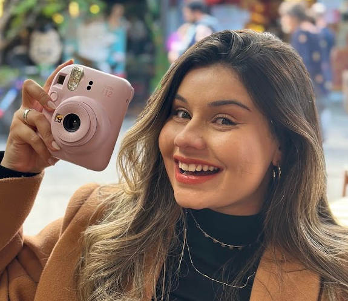
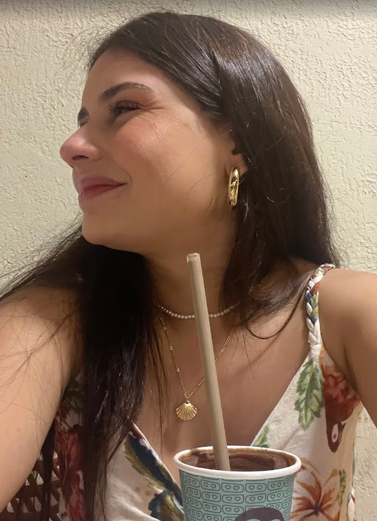
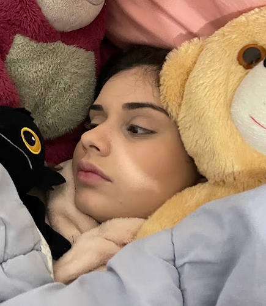
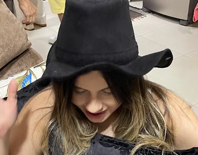
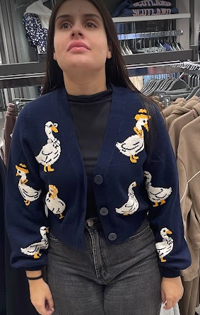

um aniversário pequeno? jamais.
24 anos de
você.
Cronograma
do niver
da gata.
Uma semana todinha para celebrar minha pessoa favorita. Com um pouquinho de suspense e um tantão de amor.
Tem surpresa vindo aí ↓feito com amor, pelo Poso ✧

seu roteiro de dias felizes
Um dia de cada vez.
Uma surpresa também.
Os dias estão marcados.
O resto? Você descobre na hora certa. 🤫
O segredo tem hora para acabar: cada surpresa abre à meia-noite do seu dia. Horário de São Paulo. ♡
um pequeno acervo de você
Minha coleção favorita
de todos os seus jeitos.
A sorridente. A sonolenta. A séria. A que inventa moda.
Eu escolheria todas, todas as vezes.




uma coisa que não é surpresa
Você faz os meus dias
mais bonitos.
Aline, eu quis transformar seu aniversário em vários pedacinhos de felicidade. Para a gente rir, sair da rotina, ficar pertinho e guardar mais histórias.
Que seus 24 venham cheios de motivos para sorrir.
E que eu esteja por perto para ver cada um deles.
Do seu Poso ♡